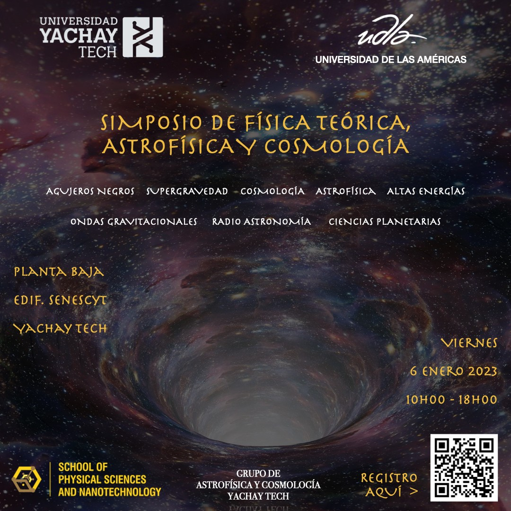
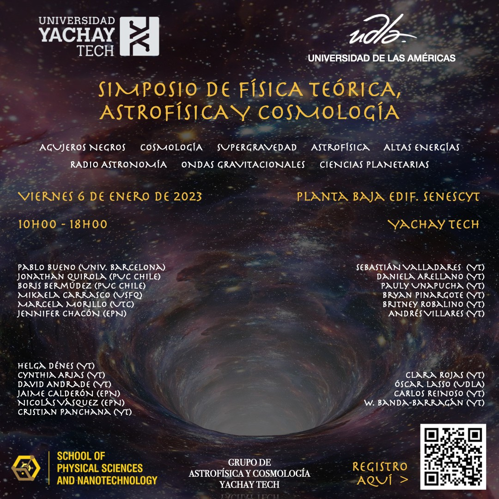
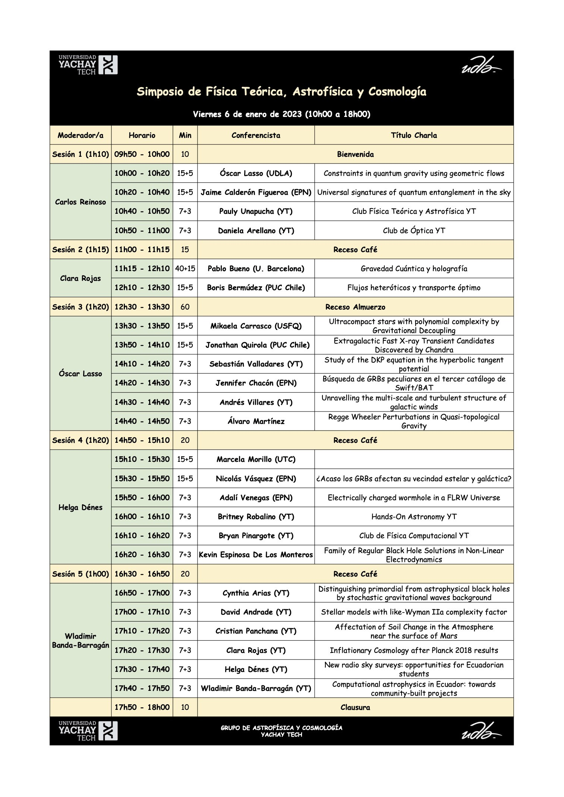

Acerca del evento
El Simposio de Física Teórica, Astrofísica y Cosmología es un evento académico organizado por la Universidad Yachay Tech y la UDLA. El simposio reúne a conferencistas, estudiantes de pregrado y posgrado, y jóvenes investigador@s interesad@s en temas de física teórica, astrofísica, cosmología, gravitación, relatividad, física computacional y áreas afines.
Las charlas están principalmente dirigidas a estudiantes universitarios de pregrado y posgrado en ciencias exactas. Algunas presentaciones serán en español y otras en inglés.
Información importante
Lugar: Planta Baja del Edificio Senescyt,
campus de la Universidad Yachay Tech.
Ver ubicación en Google Maps
El evento es gratuito. Por favor tome en consideración que el campus de Yachay Tech es extenso y las distancias pueden ser grandes.
La bienvenida será a las 09h50 y el evento finalizará a las 18h00.
Para obtener un certificado de participación, cada asistente deberá registrar su asistencia mediante dos códigos QR: uno disponible durante la mañana y otro durante la tarde. Quienes cuenten con ambos registros recibirán posteriormente un certificado digital por 8 horas académicas.
La organización proveerá bocadillos y bebidas durante los recesos. Para acceder al refrigerio, se deberán retirar tickets durante el registro.
Los almuerzos correrán por cuenta de cada participante. Tanto el campus de Yachay Tech como Urcuquí cuentan con varias opciones para almorzar. Se recomienda consultar con l@s estudiantes locales sobre las mejores opciones.
Programa
A continuación se presenta el programa del Simposio de Física Teórica, Astrofísica y Cosmología.
| Sesión / Moderador(a) | Horario | Min | Conferencista | Título de la charla |
|---|---|---|---|---|
| Sesión 1 | 09h50 - 10h00 | 10 | Bienvenida | |
| Carlos Reinoso | 10h00 - 10h20 | 15+5 | Óscar Lasso (UDLA) | Constraints in quantum gravity using geometric flows |
| 10h20 - 10h40 | 15+5 | Jaime Calderón Figueroa (EPN) | Universal signatures of quantum entanglement in the sky | |
| 10h40 - 10h50 | 7+3 | Pauly Unapucha (YT) | Club Física Teórica y Astrofísica YT | |
| 10h50 - 11h00 | 7+3 | Daniela Arellano (YT) | Club de Óptica YT | |
| Sesión 2 | 11h00 - 11h15 | 15 | Receso Café | |
| Clara Rojas | 11h15 - 12h10 | 40+15 | Pablo Bueno (U. Barcelona) | Gravedad Cuántica y holografía |
| 12h10 - 12h30 | 15+5 | Boris Bermúdez (PUC Chile) | Flujos heteróticos y transporte óptimo | |
| Sesión 3 | 12h30 - 13h30 | 60 | Receso Almuerzo | |
| Óscar Lasso | 13h30 - 13h50 | 15+5 | Mikaela Carrasco (USFQ) | Ultracompact stars with polynomial complexity by Gravitational Decoupling |
| 13h50 - 14h10 | 15+5 | Jonathan Quirola (PUC Chile) | Extragalactic Fast X-ray Transient Candidates Discovered by Chandra | |
| 14h10 - 14h20 | 7+3 | Sebastián Valladares (YT) | Study of the DKP equation in the hyperbolic tangent potential | |
| 14h20 - 14h30 | 7+3 | Jennifer Chacón (EPN) | Búsqueda de GRBs peculiares en el tercer catálogo de Swift/BAT | |
| 14h30 - 14h40 | 7+3 | Andrés Villares (YT) | Unravelling the multi-scale and turbulent structure of galactic winds | |
| 14h40 - 14h50 | 7+3 | Álvaro Martínez | Regge Wheeler Perturbations in Quasi-topological Gravity | |
| Sesión 4 | 14h50 - 15h10 | 20 | Receso Café | |
| Helga Dénes | 15h10 - 15h30 | 15+5 | Marcela Morillo (UTC) | Por confirmar |
| 15h30 - 15h50 | 15+5 | Nicolás Vásquez (EPN) | ¿Acaso los GRBs afectan su vecindad estelar y galáctica? | |
| 15h50 - 16h00 | 7+3 | Adalí Venegas (EPN) | Electrically charged wormhole in a FLRW Universe | |
| 16h00 - 16h10 | 7+3 | Britney Robalino (YT) | Hands-On Astronomy YT | |
| 16h10 - 16h20 | 7+3 | Bryan Pinargote (YT) | Club de Física Computacional YT | |
| 16h20 - 16h30 | 7+3 | Kevin Espinosa De Los Monteros | Family of Regular Black Hole Solutions in Non-Linear Electrodynamics | |
| Sesión 5 | 16h30 - 16h50 | 20 | Receso Café | |
| Wladimir Banda-Barragán | 16h50 - 17h00 | 7+3 | Cynthia Arias (YT) | Distinguishing primordial from astrophysical black holes by stochastic gravitational waves background |
| 17h00 - 17h10 | 7+3 | David Andrade (YT) | Stellar models with Lake-Wyman IIa complexity factor | |
| 17h10 - 17h20 | 7+3 | Cristian Panchana (YT) | Affectation of Soil Change in the Atmosphere near the surface of Mars | |
| 17h20 - 17h30 | 7+3 | Clara Rojas (YT) | Inflationary Cosmology after Planck 2018 results | |
| 17h30 - 17h40 | 7+3 | Helga Dénes (YT) | New radio sky surveys: opportunities for Ecuadorian students | |
| 17h40 - 17h50 | 7+3 | Wladimir Banda-Barragán (YT) | Computational astrophysics in Ecuador: towards community-built projects | |
| Clausura | 17h50 - 18h00 | 10 | Clausura del simposio | |
Material gráfico


